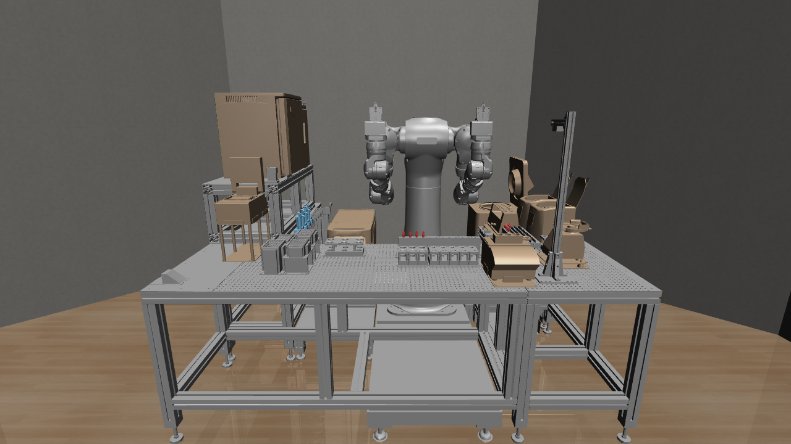

Paper Title
MaholoBioBench:
A Protocol-Aware Benchmark for Bio-Laboratory Robot Manipulation
把 Maholo 数字孪生从“仿真演示环境”推进为可定义任务、可记录协议状态、可复现评分的 benchmark。
Maholo Digital Twin
Task Taxonomy
Protocol-Aware Metrics
Baselines
开场只讲一句：这项研究的主线已经收敛为 benchmark paper，而不是新算法 paper。
Core Position
MaholoBioBench 不是某个策略，而是一套“考试系统”
MaholoBioBench 定义生物实验室机器人在 Maholo 数字孪生中的任务层级、协议状态、评价指标和可复现实验流程，用来区分 geometric success 与 experimental protocol success。
研究对象
面向 Maholo 数字孪生中的生物实验室机器人操作，定义可复现、可比较的任务和评价流程。
核心贡献
构建仿真环境、任务层级、协议状态、评价指标和 episode 输出格式，让实验操作可以被系统化评分。
Baseline 作用
用现有策略在冻结任务上建立参考结果，验证任务可执行性、难度梯度和 protocol-aware metrics 的区分能力。
这里需要避免讲成“我要提出一个新控制算法”。真正可防御的贡献是 benchmark contract 和 protocol-aware evaluation。
Contribution 1
Maholo 生物实验室数字孪生环境

固定但高度结构化的实验室空间
- 围绕 Maholo 机器人量身设计的 lab room
- 机器人周围布置工作台、培养箱、冰箱、rack、pipette、tube、tip box 等
- 价值不是随机生成场景，而是提供贴近实验室自动化工作站的 high-fidelity digital twin
这一页强调和普通桌面 manipulation benchmark 的差异：你的环境是固定小屋子，但固定不等于弱，价值在结构化、实验室设备密度和 Maholo 专用设计。
Contribution 2
三层次任务体系
层级
定义
Task Families
评价重点
Level 1
General Primitives
不绑定具体实验协议的基础动作能力
ReachTargetPose
GraspLabObject
TransportHeldObject
OpenArticulatedEquipment
pose error、grasp stability、collision、door angle
Level 2
Bio-Lab Skills
带实验室物体和操作语义的技能
RetrieveContainer
TransferLiquid
sample identity、volume、tip state、equipment state
Level 3
Protocol Tasks
由多个技能组成的长时序实验协议
RetrieveAndTransferSample
PrepareDilutionSeries
protocol completion、step order、progress、violations
三个层级都采用统一结构：每个 Task Family 下包含具体 instances，并通过 variations 构造泛化测试。
这一页回应刚才确认的关键点：普遍机器人 benchmark 更常用 family 级别，而不是把单一对象任务当顶层任务。
Design Pattern
每个 Task Family 如何展开
Task Family
Instances
Variations
ReachTargetPose
ReachPipetteGraspPose
ReachTubePose
ReachEquipmentHandle
target pose、target affordance、arm、camera、layout、clutter
GraspLabObject
GraspPipette
GraspTube
GraspPlate
GraspLidOrCap
object type、object pose、rack slot、grasp affordance、mass、friction
OpenArticulatedEquipment
OpenCoolIncubator
OpenDeepFreezer
OpenCO2Incubator
equipment type、initial angle、target angle、handle pose、latch state
TransferLiquid
TubeToTubeTransfer
TubeToPlateTransfer
MultiChannelPlateTransfer
volume、sample id、tip state、source / target container、distance
这页可以直接用来和导师讨论任务命名。Task Family 用抽象能力命名，instance 用具体对象和实验场景命名，variation 用来构造泛化测试。
Contribution 3
每个任务都制定实验操作评价方法
评分层级
判断问题
典型指标
实验意义
Robot / Geometry
动作有没有完成？
task success、pose error、collision、trajectory smoothness
保证基础机器人动作可控
Protocol Progress
步骤有没有按协议推进？
completion rate、progress score、step order accuracy
长时序实验不能只看最终位置
Sample Correctness
是否操作正确样品？
sample identity accuracy、wrong sample count
拿错样品在几何上可能成功，但实验失败
Liquid Semantics
液体状态是否正确？
volume error、relative volume error、concentration correctness
体积和浓度决定实验结果
Bio-Lab Violations
是否违反实验约束？
contamination、tip reuse、temperature zone、equipment state
污染和温区错误应直接扣分
这里是最核心的研究新意。普通 benchmark 多看几何动作，MaholoBioBench 还要看协议、样品、液体、污染和设备状态。
Contribution 4
Baseline 范围：覆盖冻结任务，而不是所有未来任务
推荐策略：v0 覆盖所有冻结的 8 个 task families，每个 family 先选择 1-2 个代表性 instance 运行 baseline。
Agent Type
作用
论文中证明什么
Scripted Expert
生成可行示范和任务上限
任务不是不可解，episode 格式可复现
Imitation / BC
从 expert trajectories 学习
Level 1 到 Level 3 的误差累积
State-Based RL
用奖励学习连续控制
稀疏奖励和 protocol metrics 下的能力边界
Sequence / Planner
组合多个 primitive 执行协议
长时序、步骤顺序和状态追踪难点
Optional VLA
作为外部现有模型测试
可作为扩展实验，不定义核心贡献
这里回答“所有还是大部分”的问题：论文第一版不要承诺所有 future tasks。冻结的 v0 family 要尽量全覆盖，但每个 family 可以先选代表实例。
Expected Evidence
最后需要形成的结果表
结果表
Rows
Columns / Evidence
证明目的
Task Suite Summary
8 task families + representative instances
level、objects、variations、metrics
任务定义完整，不是 demo collection
Expert Feasibility
8 task families
expert SR、steps、collision、progress
证明任务可执行
Baseline Comparison
scripted / imitation / RL / sequence
Level 1/2/3 SR、volume error、violations
证明 benchmark 有区分度
Metric Gap
agents / tasks
geometric success vs protocol success
证明普通成功率不够
Generalization
seen vs unseen
layout、sample id、rack slot、equipment state
证明 variation 设计有价值
这页可以作为接下来工作的验收标准。真正的 benchmark paper 最终要有这些表，而不只是环境截图。
Milestone · 2026.07-2027.03
2027 年 3 月前完成 MaholoBioBench v0 闭环
阶段
时间
目标
交付物
M1
Environment Readiness
2026.7-2026.8
完善 Maholo robosuite 中所有模型的 collision model，并把关键仪器做成可交互 object
稳定碰撞几何；可打开的门/盖；可运行或可切换状态的仪器
M2
Task Definition
2026.8-2026.9
定义所有 v0 动作任务的 Task Families、Instances 和 Variations
冻结 task registry；确定 seen / unseen variations；完成任务文档
M3
Protocol Evaluation
2026.9-2026.10
定义基于实验流程语义的状态、规则和评价方法
protocol state schema；metrics；violations；episode summary 输出
M4
Baseline Results
2026.10-2027.03
用现有方法完成 baseline，并形成论文结果表
BC、SAC、PPO 等结果；expert feasibility；metric gap；generalization 表
这页给出从 7 月到年底的执行路线。重点是先让环境和任务定义稳定，再进入协议评价和 baseline 实验。
Final Formulation
MaholoBioBench
一个基于 Maholo 生物实验室数字孪生的协议感知机器人操作 benchmark：
贡献固定但高保真的实验室环境、三层次任务体系、实验协议评价标准，并用 baselines 验证任务可执行性和指标区分度。
EnvironmentMaholo 专用实验室小屋
TasksTask Family / Instance / Variation
Protocolsample、volume、tip、equipment
Metricsgeometry + experiment success
Baselines覆盖 v0 冻结任务
最后收束：这就是接下来论文的主线表达。不要把算法放在中心，算法只是考生。
Related Pages
相关页面入口
主 deck 作为入口页，其余页面作为辅助材料链接。
这一页只作为导航入口，不承担主要论述。